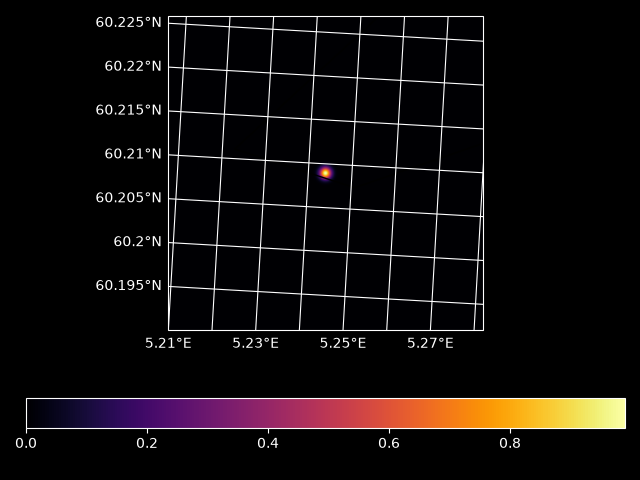
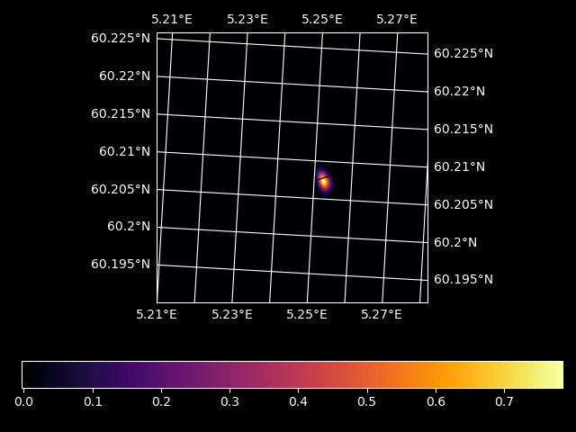

Note
Go to the end to download the full example code.
Euler simulation / Finite difference of blob with the Norkyst nordic ocean model
import logging
import opendrift
import matplotlib.pyplot as plt
from opendrift import test_data_folder as tdf
from opendrift.readers import reader_netCDF_CF_generic
from opendrift.models.basemodel import OpenDriftSimulation
from opendrift.models import eulerdrift
reader_norkyst = reader_netCDF_CF_generic.Reader('https://thredds.met.no/thredds/dodsC/fou-hi/norkystv3_800m_m00_be')
# reader_norkyst = reader_netCDF_CF_generic.Reader(tdf + '16Nov2015_NorKyst_z_surface/norkyst800_subset_16Nov2015.nc')
lon0, lat0 = reader_norkyst.xy2lonlat(reader_norkyst.xmin, reader_norkyst.ymin)
s = eulerdrift.ExplSimulation.new(5.21, 60.19, 10., shape = (400, 400))
s.t0 = reader_norkyst.start_time
s.readers.append(eulerdrift.OpendriftReader(reader_norkyst))
print(s.U(0.0))
loc, lac = s.grid.center()
s.source_gaussian_blob(loc, lac, 1., 100, 50.)
(array([[ 0.00758394, 0.0075844 , 0.00758521, ..., -0.02131035,
-0.02151386, -0.02171497],
[ 0.00729572, 0.00729641, 0.00729746, ..., -0.02141476,
-0.02161671, -0.02181626],
[ 0.00700716, 0.00700808, 0.00700935, ..., -0.02152156,
-0.02172196, -0.02191995],
...,
[-0.04246218, -0.0424103 , -0.04236632, ..., -0.04409071,
-0.04288802, -0.04168031],
[-0.04215056, -0.04210381, -0.04206496, ..., -0.043843 ,
-0.04263705, -0.04142609],
[-0.04183103, -0.04178942, -0.0417557 , ..., -0.04360029,
-0.04239109, -0.04117688]], shape=(400, 400)), array([[0.03826203, 0.03863498, 0.03900726, ..., 0.05221757, 0.05234369,
0.05247034],
[0.03830868, 0.0386812 , 0.03905303, ..., 0.0522544 , 0.05238087,
0.05250786],
[0.03835601, 0.03872809, 0.03909948, ..., 0.05229072, 0.05241752,
0.05254485],
...,
[0.02716313, 0.0271407 , 0.02712854, ..., 0.02335888, 0.02297988,
0.02260177],
[0.02716748, 0.02715172, 0.02714622, ..., 0.02304981, 0.02267139,
0.02229387],
[0.02716157, 0.02715247, 0.02715364, ..., 0.02273983, 0.022362 ,
0.02198507]], shape=(400, 400)))
Plot the initial conditions
s.grid.plot()
plt.show()

Integrate
s.integrate(dt = 20., max_steps=300)
dx too big, dx = 10.0 > h = 1.255716228092052
dx too big, dx = 10.0 > h = 1.2568256166785174
dx too big, dx = 10.0 > h = 1.257936284973986
dx too big, dx = 10.0 > h = 1.2590482327518693
dx too big, dx = 10.0 > h = 1.2601614597688786
dx too big, dx = 10.0 > h = 1.2612759657648944
dx too big, dx = 10.0 > h = 1.2623917504628375
dx too big, dx = 10.0 > h = 1.2635088135685415
dx too big, dx = 10.0 > h = 1.2646271547706196
dx too big, dx = 10.0 > h = 1.265746773740336
dx too big, dx = 10.0 > h = 1.2668676701314732
dx too big, dx = 10.0 > h = 1.2679898435801995
dx too big, dx = 10.0 > h = 1.269113293704938
dx too big, dx = 10.0 > h = 1.2702380201062289
dx too big, dx = 10.0 > h = 1.2713640223665992
dx too big, dx = 10.0 > h = 1.272491300050425
dx too big, dx = 10.0 > h = 1.273619852703796
dx too big, dx = 10.0 > h = 1.2747496798543807
dx too big, dx = 10.0 > h = 1.2758807810112855
dx too big, dx = 10.0 > h = 1.2770131556649216
dx too big, dx = 10.0 > h = 1.2781468032868615
dx too big, dx = 10.0 > h = 1.2792817233297022
dx too big, dx = 10.0 > h = 1.2804179152269253
dx too big, dx = 10.0 > h = 1.2815553783927545
dx too big, dx = 10.0 > h = 1.282694112222016
dx too big, dx = 10.0 > h = 1.2838341160899935
dx too big, dx = 10.0 > h = 1.2849753893522886
dx too big, dx = 10.0 > h = 1.2861179313446751
dx too big, dx = 10.0 > h = 1.2872617413829524
dx too big, dx = 10.0 > h = 1.2884068187628055
dx too big, dx = 10.0 > h = 1.2895531627596546
dx too big, dx = 10.0 > h = 1.2907007726285105
dx too big, dx = 10.0 > h = 1.2918496476038268
dx too big, dx = 10.0 > h = 1.292999786899351
dx too big, dx = 10.0 > h = 1.2941511897079783
dx too big, dx = 10.0 > h = 1.2953038552015976
dx too big, dx = 10.0 > h = 1.2964577825309458
dx too big, dx = 10.0 > h = 1.2976129708254542
dx too big, dx = 10.0 > h = 1.298769419193097
dx too big, dx = 10.0 > h = 1.2999271267202388
dx too big, dx = 10.0 > h = 1.3010860924714813
dx too big, dx = 10.0 > h = 1.3022463154895108
dx too big, dx = 10.0 > h = 1.3034077947949418
dx too big, dx = 10.0 > h = 1.3045705293861611
dx too big, dx = 10.0 > h = 1.305734518239174
dx too big, dx = 10.0 > h = 1.3068997603074444
dx too big, dx = 10.0 > h = 1.3080662545217392
dx too big, dx = 10.0 > h = 1.3092339997899705
dx too big, dx = 10.0 > h = 1.3104029949970328
dx too big, dx = 10.0 > h = 1.3115732390046482
dx too big, dx = 10.0 > h = 1.3127447306512003
dx too big, dx = 10.0 > h = 1.3139174687515776
dx too big, dx = 10.0 > h = 1.3150914520970085
dx too big, dx = 10.0 > h = 1.3162666794548994
dx too big, dx = 10.0 > h = 1.3174431495686714
dx too big, dx = 10.0 > h = 1.3186208611575942
dx too big, dx = 10.0 > h = 1.3197998129166235
dx too big, dx = 10.0 > h = 1.3209800035162345
dx too big, dx = 10.0 > h = 1.3221614316022525
dx too big, dx = 10.0 > h = 1.3233440957956897
dx too big, dx = 10.0 > h = 1.324527994692575
dx too big, dx = 10.0 > h = 1.3257131268637847
dx too big, dx = 10.0 > h = 1.326899490854874
dx too big, dx = 10.0 > h = 1.3280870851859061
dx too big, dx = 10.0 > h = 1.3292759083512822
dx too big, dx = 10.0 > h = 1.3304659588195675
dx too big, dx = 10.0 > h = 1.3316572350333218
dx too big, dx = 10.0 > h = 1.3328497354089233
dx too big, dx = 10.0 > h = 1.3340434583363956
dx too big, dx = 10.0 > h = 1.3352384021792345
dx too big, dx = 10.0 > h = 1.3364345652742293
dx too big, dx = 10.0 > h = 1.3376319459312904
dx too big, dx = 10.0 > h = 1.3388305424332696
dx too big, dx = 10.0 > h = 1.3400303530357816
dx too big, dx = 10.0 > h = 1.3412313759670296
dx too big, dx = 10.0 > h = 1.3424336094276221
dx too big, dx = 10.0 > h = 1.343637051590395
dx too big, dx = 10.0 > h = 1.3448417006002311
dx too big, dx = 10.0 > h = 1.346047554573877
dx too big, dx = 10.0 > h = 1.347254611599764
dx too big, dx = 10.0 > h = 1.3484628697378207
dx too big, dx = 10.0 > h = 1.3496723270192954
dx too big, dx = 10.0 > h = 1.3508829814465668
dx too big, dx = 10.0 > h = 1.3520948309929612
dx too big, dx = 10.0 > h = 1.3533078736025663
dx too big, dx = 10.0 > h = 1.354522107190046
dx too big, dx = 10.0 > h = 1.3557375296404506
dx too big, dx = 10.0 > h = 1.3569541388090318
dx too big, dx = 10.0 > h = 1.3581719325210526
dx too big, dx = 10.0 > h = 1.3593909085715976
dx too big, dx = 10.0 > h = 1.3606110647253848
dx too big, dx = 10.0 > h = 1.3618323987165735
dx too big, dx = 10.0 > h = 1.3630549082485728
dx too big, dx = 10.0 > h = 1.3642785909938504
dx too big, dx = 10.0 > h = 1.3655034445937386
dx too big, dx = 10.0 > h = 1.3667294666582421
dx too big, dx = 10.0 > h = 1.3679566547658435
dx too big, dx = 10.0 > h = 1.3691850064633069
dx too big, dx = 10.0 > h = 1.3704145192654849
dx too big, dx = 10.0 > h = 1.3716451906551212
dx too big, dx = 10.0 > h = 1.3728770180826515
dx too big, dx = 10.0 > h = 1.3741099989660097
dx too big, dx = 10.0 > h = 1.3753441306904275
dx too big, dx = 10.0 > h = 1.3765794106082347
dx too big, dx = 10.0 > h = 1.3778158360386623
dx too big, dx = 10.0 > h = 1.3790534042676386
dx too big, dx = 10.0 > h = 1.380292112547592
dx too big, dx = 10.0 > h = 1.3815319580972454
dx too big, dx = 10.0 > h = 1.3827729381014173
dx too big, dx = 10.0 > h = 1.3840150497108183
dx too big, dx = 10.0 > h = 1.3852582900418464
dx too big, dx = 10.0 > h = 1.3865026561763816
dx too big, dx = 10.0 > h = 1.3877481451615854
dx too big, dx = 10.0 > h = 1.3889947540096905
dx too big, dx = 10.0 > h = 1.3902424796977981
dx too big, dx = 10.0 > h = 1.3914913191676694
dx too big, dx = 10.0 > h = 1.39274126932552
dx too big, dx = 10.0 > h = 1.3939923270418084
dx too big, dx = 10.0 > h = 1.3952444891510316
dx too big, dx = 10.0 > h = 1.3964977524515134
dx too big, dx = 10.0 > h = 1.3977521137051963
dx too big, dx = 10.0 > h = 1.399007569637429
dx too big, dx = 10.0 > h = 1.4002641169367571
dx too big, dx = 10.0 > h = 1.4015217522547117
dx too big, dx = 10.0 > h = 1.4027804722055957
dx too big, dx = 10.0 > h = 1.4040402733662725
dx too big, dx = 10.0 > h = 1.4053011522759538
dx too big, dx = 10.0 > h = 1.4065631054359817
dx too big, dx = 10.0 > h = 1.4078261293096195
dx too big, dx = 10.0 > h = 1.4090902203218336
dx too big, dx = 10.0 > h = 1.4103553748590787
dx too big, dx = 10.0 > h = 1.4116215892690815
dx too big, dx = 10.0 > h = 1.4128888598606257
dx too big, dx = 10.0 > h = 1.4141571829033337
dx too big, dx = 10.0 > h = 1.415426554627449
dx too big, dx = 10.0 > h = 1.4166969712236186
dx too big, dx = 10.0 > h = 1.4179684288426748
dx too big, dx = 10.0 > h = 1.419240923595416
dx too big, dx = 10.0 > h = 1.4205144515523862
dx too big, dx = 10.0 > h = 1.4217890087436564
dx too big, dx = 10.0 > h = 1.4230645911586037
dx too big, dx = 10.0 > h = 1.4243411947456899
dx too big, dx = 10.0 > h = 1.4256188154122404
dx too big, dx = 10.0 > h = 1.4268974490242237
dx too big, dx = 10.0 > h = 1.4281770914060266
dx too big, dx = 10.0 > h = 1.4294577383402343
dx too big, dx = 10.0 > h = 1.4307393855674049
dx too big, dx = 10.0 > h = 1.4320220287858478
dx too big, dx = 10.0 > h = 1.4333056636513988
dx too big, dx = 10.0 > h = 1.4345902857771964
dx too big, dx = 10.0 > h = 1.4358758907334563
dx too big, dx = 10.0 > h = 1.4371624740472473
dx too big, dx = 10.0 > h = 1.4384500312022657
dx too big, dx = 10.0 > h = 1.439738557638609
dx too big, dx = 10.0 > h = 1.4410280487525513
dx too big, dx = 10.0 > h = 1.4423184998963148
dx too big, dx = 10.0 > h = 1.443609906377844
dx too big, dx = 10.0 > h = 1.4449022634605804
dx too big, dx = 10.0 > h = 1.446195566363231
dx too big, dx = 10.0 > h = 1.4474898102595473
dx too big, dx = 10.0 > h = 1.448784990278088
dx too big, dx = 10.0 > h = 1.4500811015020014
dx too big, dx = 10.0 > h = 1.451378138968788
dx too big, dx = 10.0 > h = 1.4526760976700785
dx too big, dx = 10.0 > h = 1.4539749725513997
dx too big, dx = 10.0 > h = 1.4552747585119485
dx too big, dx = 10.0 > h = 1.4565754504043629
dx too big, dx = 10.0 > h = 1.4578770430344894
dx too big, dx = 10.0 > h = 1.4591795311611566
dx too big, dx = 10.0 > h = 1.4604829094959442
dx too big, dx = 10.0 > h = 1.4617871727029514
dx too big, dx = 10.0 > h = 1.4630923153985698
dx too big, dx = 10.0 > h = 1.4643983321512497
dx too big, dx = 10.0 > h = 1.465705217481272
dx too big, dx = 10.0 > h = 1.4670129658605178
dx too big, dx = 10.0 > h = 1.4683215717122355
dx too big, dx = 10.0 > h = 1.469631029410813
dx too big, dx = 10.0 > h = 1.4709413332815444
dx too big, dx = 10.0 > h = 1.472252477600401
dx too big, dx = 10.0 > h = 1.4735644565937995
dx too big, dx = 10.0 > h = 1.4748772644383712
dx too big, dx = 10.0 > h = 1.4762873451281089
dx too big, dx = 10.0 > h = 1.477599231863126
dx too big, dx = 10.0 > h = 1.4773015744157947
dx too big, dx = 10.0 > h = 1.477004031516597
dx too big, dx = 10.0 > h = 1.4767066031027996
dx too big, dx = 10.0 > h = 1.4764092891117113
dx too big, dx = 10.0 > h = 1.4761120894806843
dx too big, dx = 10.0 > h = 1.475815004147113
dx too big, dx = 10.0 > h = 1.4755180330484357
dx too big, dx = 10.0 > h = 1.4752211761221317
dx too big, dx = 10.0 > h = 1.4749244333057254
dx too big, dx = 10.0 > h = 1.4746278045367813
dx too big, dx = 10.0 > h = 1.4743312897529084
dx too big, dx = 10.0 > h = 1.4740348888917574
dx too big, dx = 10.0 > h = 1.4737386018910223
dx too big, dx = 10.0 > h = 1.4734424286884396
dx too big, dx = 10.0 > h = 1.4731463692217865
dx too big, dx = 10.0 > h = 1.4728504234288855
dx too big, dx = 10.0 > h = 1.4725545912475997
dx too big, dx = 10.0 > h = 1.4722588726158354
dx too big, dx = 10.0 > h = 1.4719632674715408
dx too big, dx = 10.0 > h = 1.4716677757527068
dx too big, dx = 10.0 > h = 1.4713723973973667
dx too big, dx = 10.0 > h = 1.4710771323435952
dx too big, dx = 10.0 > h = 1.4707819805295108
dx too big, dx = 10.0 > h = 1.470486941893273
dx too big, dx = 10.0 > h = 1.470192016373084
dx too big, dx = 10.0 > h = 1.4698972039071874
dx too big, dx = 10.0 > h = 1.4696025044338707
dx too big, dx = 10.0 > h = 1.4693079178914614
dx too big, dx = 10.0 > h = 1.4690134442183305
dx too big, dx = 10.0 > h = 1.4687190833528903
dx too big, dx = 10.0 > h = 1.4684248352335956
dx too big, dx = 10.0 > h = 1.4681306997989425
dx too big, dx = 10.0 > h = 1.4678366769874696
dx too big, dx = 10.0 > h = 1.467542766737757
dx too big, dx = 10.0 > h = 1.4672489689884276
dx too big, dx = 10.0 > h = 1.4669552836781448
dx too big, dx = 10.0 > h = 1.4666617107456148
dx too big, dx = 10.0 > h = 1.4663682501295845
dx too big, dx = 10.0 > h = 1.4660749017688437
dx too big, dx = 10.0 > h = 1.465781665602224
dx too big, dx = 10.0 > h = 1.4654885415685965
dx too big, dx = 10.0 > h = 1.4651955296068777
dx too big, dx = 10.0 > h = 1.4649026296560215
dx too big, dx = 10.0 > h = 1.4646098416550266
dx too big, dx = 10.0 > h = 1.4643171655429312
dx too big, dx = 10.0 > h = 1.4640246012588165
dx too big, dx = 10.0 > h = 1.4637321487418047
dx too big, dx = 10.0 > h = 1.4634398079310587
dx too big, dx = 10.0 > h = 1.4631475787657833
dx too big, dx = 10.0 > h = 1.4628554611852258
dx too big, dx = 10.0 > h = 1.4625634551286721
dx too big, dx = 10.0 > h = 1.4622715605354528
dx too big, dx = 10.0 > h = 1.461979777344937
dx too big, dx = 10.0 > h = 1.4616881054965365
dx too big, dx = 10.0 > h = 1.4613965449297044
dx too big, dx = 10.0 > h = 1.4611050955839335
dx too big, dx = 10.0 > h = 1.4608137573987596
dx too big, dx = 10.0 > h = 1.4605225303137588
dx too big, dx = 10.0 > h = 1.4602314142685484
dx too big, dx = 10.0 > h = 1.4599404092027861
dx too big, dx = 10.0 > h = 1.4596495150561712
dx too big, dx = 10.0 > h = 1.459358731768445
dx too big, dx = 10.0 > h = 1.459068059279388
dx too big, dx = 10.0 > h = 1.4587774975288221
dx too big, dx = 10.0 > h = 1.4584870464566109
dx too big, dx = 10.0 > h = 1.4581967060026584
dx too big, dx = 10.0 > h = 1.457906476106909
dx too big, dx = 10.0 > h = 1.4576163567093483
dx too big, dx = 10.0 > h = 1.4573263477500031
dx too big, dx = 10.0 > h = 1.4570364491689403
dx too big, dx = 10.0 > h = 1.4567466609062674
dx too big, dx = 10.0 > h = 1.4564569829021334
dx too big, dx = 10.0 > h = 1.456167415096727
dx too big, dx = 10.0 > h = 1.4558779574302783
dx too big, dx = 10.0 > h = 1.455588609843057
dx too big, dx = 10.0 > h = 1.4552993722753749
dx too big, dx = 10.0 > h = 1.455010244667582
dx too big, dx = 10.0 > h = 1.4547212269600718
dx too big, dx = 10.0 > h = 1.4544323190932755
dx too big, dx = 10.0 > h = 1.4541435210076672
dx too big, dx = 10.0 > h = 1.4538548326437581
dx too big, dx = 10.0 > h = 1.4535662539421033
dx too big, dx = 10.0 > h = 1.4532777848432956
dx too big, dx = 10.0 > h = 1.45298942528797
dx too big, dx = 10.0 > h = 1.4527011752168002
dx too big, dx = 10.0 > h = 1.4524130345705006
dx too big, dx = 10.0 > h = 1.4521250032898279
dx too big, dx = 10.0 > h = 1.451837081315575
dx too big, dx = 10.0 > h = 1.4515492685885776
dx too big, dx = 10.0 > h = 1.451261565049712
dx too big, dx = 10.0 > h = 1.4509739706398925
dx too big, dx = 10.0 > h = 1.4506864853000745
dx too big, dx = 10.0 > h = 1.450399108971254
dx too big, dx = 10.0 > h = 1.4501118415944663
dx too big, dx = 10.0 > h = 1.4498246831107864
dx too big, dx = 10.0 > h = 1.4495376334613295
dx too big, dx = 10.0 > h = 1.4492506925872517
dx too big, dx = 10.0 > h = 1.448963860429747
dx too big, dx = 10.0 > h = 1.4486771369300508
dx too big, dx = 10.0 > h = 1.4483905220294377
dx too big, dx = 10.0 > h = 1.4481040156692222
dx too big, dx = 10.0 > h = 1.447817617790758
dx too big, dx = 10.0 > h = 1.4475313283354396
dx too big, dx = 10.0 > h = 1.4472451472447005
dx too big, dx = 10.0 > h = 1.4469590744600136
dx too big, dx = 10.0 > h = 1.446673109922892
dx too big, dx = 10.0 > h = 1.4463872535748883
dx too big, dx = 10.0 > h = 1.4461015053575936
dx too big, dx = 10.0 > h = 1.44581586521264
dx too big, dx = 10.0 > h = 1.445530333081699
dx too big, dx = 10.0 > h = 1.44524490890648
dx too big, dx = 10.0 > h = 1.4449595926287335
dx too big, dx = 10.0 > h = 1.4446743841902487
dx too big, dx = 10.0 > h = 1.4443892835328545
dx too big, dx = 10.0 > h = 1.4441042905984187
dx too big, dx = 10.0 > h = 1.4438194053288478
dx too big, dx = 10.0 > h = 1.4435346276660896
Plot the result
s.grid.plot()
plt.show()

Total running time of the script: (2 minutes 29.401 seconds)